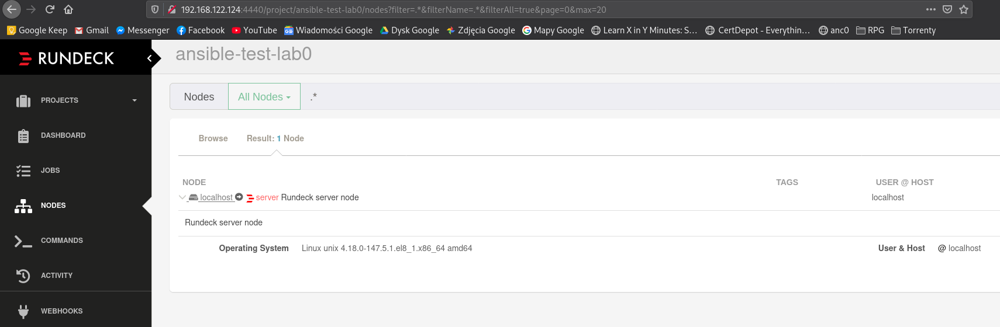
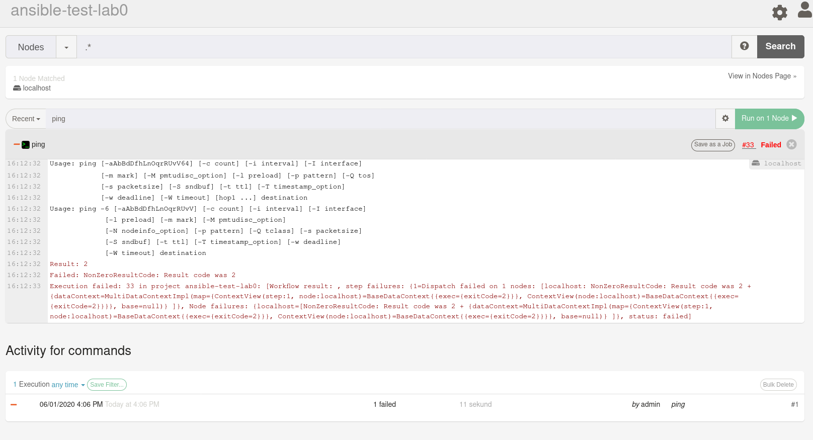
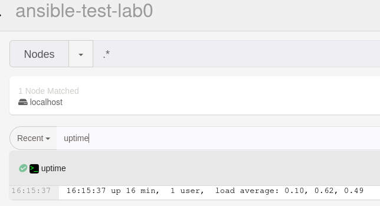
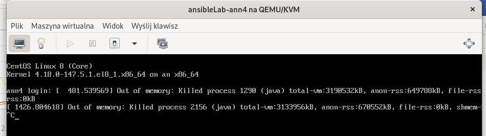
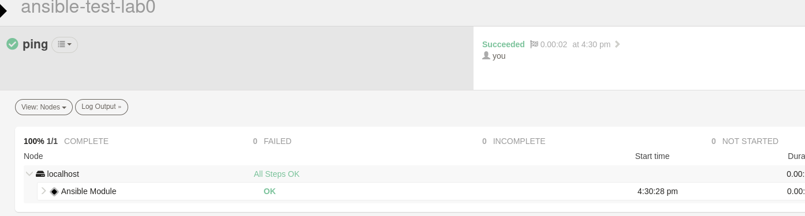

Conversation with 2345422802147713 at pon, 1 cze 2020, 16:02:34 on mateusz.stomski (facebook)
(16:02:34) Mateusz Stomski:
śmiga
(16:02:37) Mateusz Stomski:

(16:02:53) Mateusz Stomski:
ale inventory na tym nie umiem zaimportować. jest płacz jakiś
(16:03:30) Mateusz Stomski:
no i tam trzeba pokonfigurować klucze ssh itd... kupa roboty zanim to zacznie śmigać tak jak powinno
(16:15:06) Mateusz Stomski:

(16:16:59) Mateusz Stomski:
myślałem że to odpali moduł ping a to odpala komendę w terminalu normalnie xd
(16:17:01) Mateusz Stomski:

(16:24:37) Mateusz Stomski:
jeden user. jeden localhostowy node :D 1024mb ramu to za mało dla tego panelu xd
(16:24:44) Mateusz Stomski:
widać że w javie to pisane
(16:24:52) Mateusz Stomski:

(16:31:52) Mateusz Stomski:
ale puszczanie modułów tez działa. to pozostaje tylko rozkminić inventory i ssh pod tym
(16:31:54) Mateusz Stomski:

(16:42:05)
Konto zostało rozłączone i użytkownik nie jest już obecny w tej konferencji. Po nawiązaniu połączenia nastąpi ponowne dołączenie.